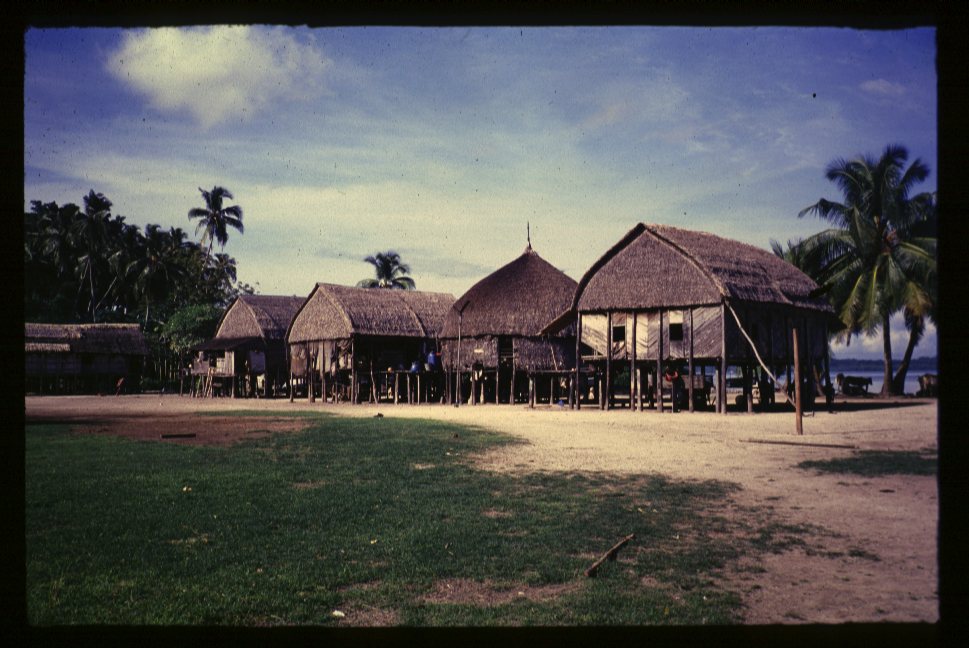

- Title Page
- Introduction
- The Islands and the Anthropologist
- Tsunami and First Response
- Wading In
- Second Tsunami
- In Search of Axes
- Steering a Sustainable Course
- Steering Committee
- Exchange Visit
- Nirnay Means Decision
- Up and Running
- Caritas Leans In
- Singh Sounds a Warning
- Midcourse Correction
- The SOPHIA Experiment
- Taking Stock
- SOPHIA Reports
The Islands and the Anthropologist
The Andaman and Nicobar archipelago lay 1,300 kilometers (about 800 miles) east of India between the Bay of Bengal and the Andaman Sea. It comprised more than 500 tropical islands and rocky uplifts, all claimed by India. Of these, 24 islands made up the Nicobars, and of these 12 were inhabited. About a third of the islands’ population were Indian traders, immigrant laborers, and workers at the islands’ several military installations. The rest were an indigenous people called Nicobarese, who numbered about 27,000 before the tsunami.[1]
The Nicobarese were one of six “scheduled tribes” in the islands specifically protected under India’s 1956 Protection of Aboriginal Tribes Regulation Act because of the vulnerability of their traditional culture. Under the terms of the act, access to the Nicobar Islands was strictly limited and all dealings with the tribes—whether for trade, social services, aid, or scientific purposes—were mediated by the Indian government, which had its administrative offices in the territorial capital of Port Blair, on South Andaman Island.
The Nicobarese were not Stone Age people. They had had contact with passing ships for 1,300 years and sporadic engagement with a succession of colonial administrations. Before the tsunami, they were aware of the outside world and had become partially assimilated. They had some electricity. Their children went to government primary schools. Some wore eyeglasses and rode bicycles. Most called themselves Christians, a handful Muslims. But these were modern accretions thinly layered over an ancient island culture with roots in the Malay-Burmese cultural complex.[2]
Traditional Nicobarese culture was inextricably tied to the island ecosystem. The Nicobarese fished, grew coconuts, and raised pigs and chickens. They planted small gardens of bananas and yams. They lived in coastal villages and built their canoes and thatched houses from materials found along the coast and in the interior rainforest. When cash was needed, to buy rice or kerosene for example, the Nicobarese sold dried coconut, called copra, to the immigrant traders.
Traditional Nicobarese life, narrated by Simron Singh.
© Aftermath-The Second Flood, Golden Girls Filmproduktion, 2014
It was estimated that in the traditional economy, the Nicobarese worked about an hour a day in productive activity.[3] They put their energy into social relations, artwork, festivals, contests, and ritual expressions that honored their ancestors and the islands’ spirits. Outside the Nicobars, the people were perhaps best known for their hentakoi and kareau, painted effigies of people, animals, and spirits that guarded their homes and their ancestors’ bones. The Nicobarese lived in what was widely said to be a tropical paradise. As late as 1998, a visiting scholar was able to say: “As yet there are no signs of any serious conflict within their society between ordinary people and ‘modernists.’”[4]
Ceremonial life in the Nicobars, narrated by Simron Singh.
© Aftermath-The Second Flood, Golden Girls Filmproduktion, 2014
Emotional scientist. In 1999, the Nicobars attracted the interest of a young Indian social scientist, Simron Singh. After earning a bachelor’s degree in English literature at the University of Delhi, Singh turned to anthropology. A self-described “misfit” and “black sheep” of a Sikh manufacturing family, Singh had a romantic disposition and sympathy for marginalized peoples.
In 1995, these inclinations took Singh to Dehradun, India, in the Himalayas, where he became involved with the Gandhi social justice movement and worked for an NGO that supported the rights of a group of forest nomads who herded water buffalos. The association ended badly. As the nomads’ cause became wildly popular in India, Singh believed that the NGO grew corrupt. Outraged and disheartened, Singh headed for the most unspoiled place he could find: the Nicobars, where he conducted research under a grant from India’s Ministry of Human ResearchDevelopment, Department of Culture. The job came with permission to live in the restricted islands.
Singh spent five years in the Nicobars doing field research for his doctorate, which was awarded by the University of Lund (Sweden) in 2003. During that time, he joined the Institute of Social Ecology in Vienna as a research associate. His work with isolated hunters and gatherers was valuable to the institute and its director, Marina Fischer-Kowalski, who studied interactions between societies and their environments, especially in times of environmental stress and social change.[5]

© Simron Singh
Village before the tsunami
Though still a young scientist, Singh was respected for his empirical work and empathetic engagement with his research subjects. He forged close personal relationships with many of the Nicobars’ most influential leaders, including elders like Jonathan, a traditionalist chief, and younger leaders like Prince Rasheed Yusuf, a member of the highest-ranking clan, who had been educated in India and had modernist dreams for his people. Singh even arranged for Rasheed to visit Vienna in 2003. Singh also worked closely with the Nicobarese Tribal Council and its operational wing, the Nicobarese Youth Association, and understood island administration well.
Singh cared deeply about the future of the islands and its peoples. According to Denis Giles, the editor of a newspaper in Port Blair who sometimes served as his research assistant, Singh was a complicated figure: a populist, a dreamer, a moralist, a scrupulous chronicler, a fiercely loyal friend -- “an emotional scientist.”[6]
[1] Venkat Ramanujam Ramani, “Gifts Without Dignity? Gift-Giving, Reciprocity and the Tsunami Response in the Andaman and Nicobar Islands, India,“ dissertation submitted in partial fulfilment of the requirements for the degree of Master of Philosophy in Environment, Society and Development, Department of Geography, University of Cambridge, 2010, p.3., citing 2001 Indian census figure of 26,565.
[2] The definitive sources for pre-tsunami Nicobarese culture are Simron Jit Singh, In the Sea of Influence: A World System Perspective of the Nicobar Islands, Lund Studies in Human Ecology 6 (Lund: Lund University), 2003 and Simron Jit Singh, The Nicobar Islands: Cultural Choices in the Aftermath of the Tsunami (Vienna: Oliver Lehmann and Czernin Verlag), 2006.
[3] Lisa Ringhofer, Simron Jit Singh, and Marina Fischer-Kowalski, “Beyond Boserup: The Role of Human Time in Agricultural Development,” in Marina Fischer-Kowalski, Anette Reenberg, Anke Schaffartzik, and Andreas Mayer, eds., Ester Boserup’s Legacy on Sustainability: Orientations for Contemporary Research, Human-Environment Interactions Series, Vol. 4(Berlin: Springer), 2014.
[4] T. N. Pandit, “Ecology, Culture, History and World-View: The Andaman and Nicobar Islanders,” in The Cultural Dimension of Ecology, The Indira Gandhi National Centre for the Arts: New Delhi, 1998. See: http://ignca.nic.in/cd_07016.htm
[5] Kirsten Lundberg interview with Simron Jit Singh on December 5, 2013, in Waterloo, Ontario. All quoted material for Singh, unless otherwise attributed, is from that interview.
[6] Raphael Barth, director, Aftermath—The Second Flood, Golden Girls Filmproduktion, 2014.